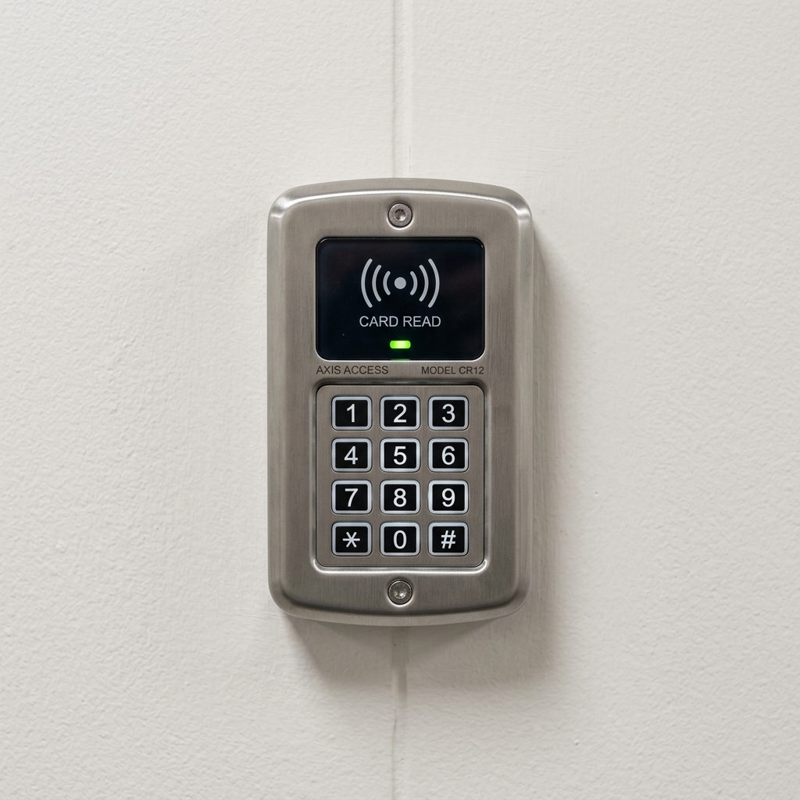
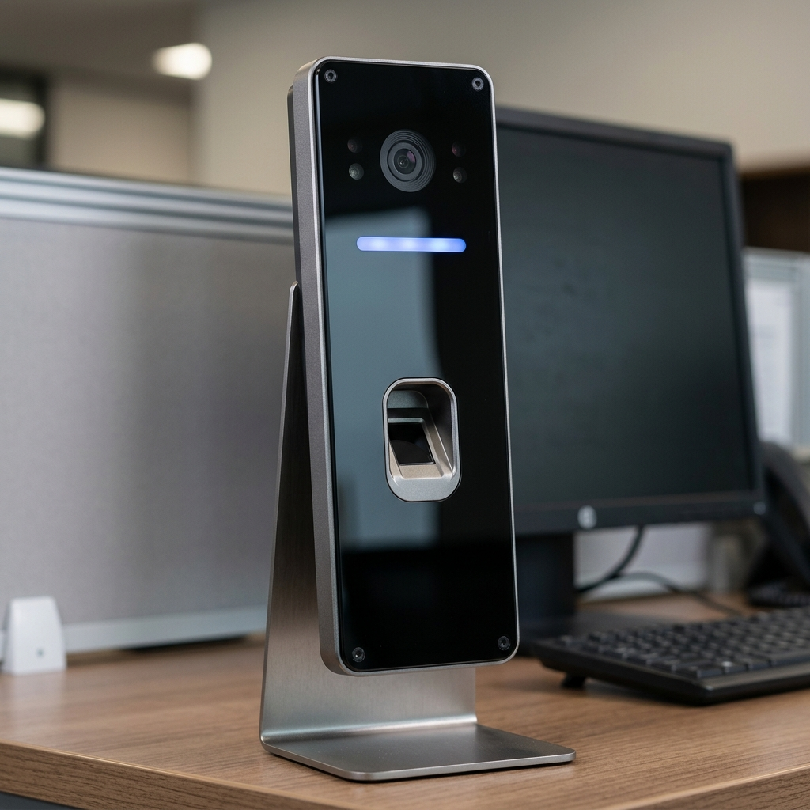
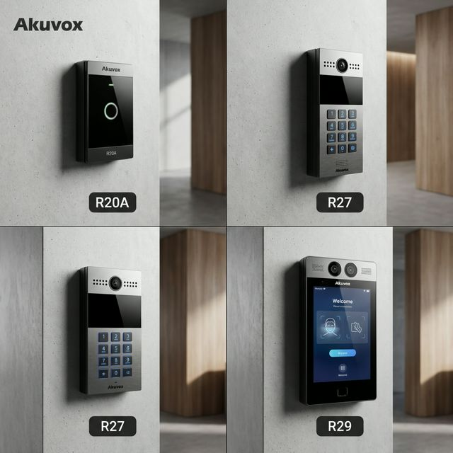
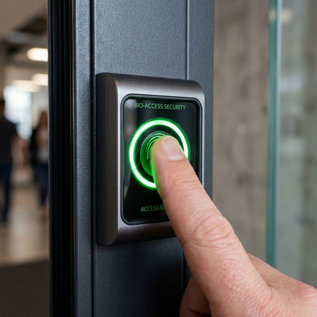
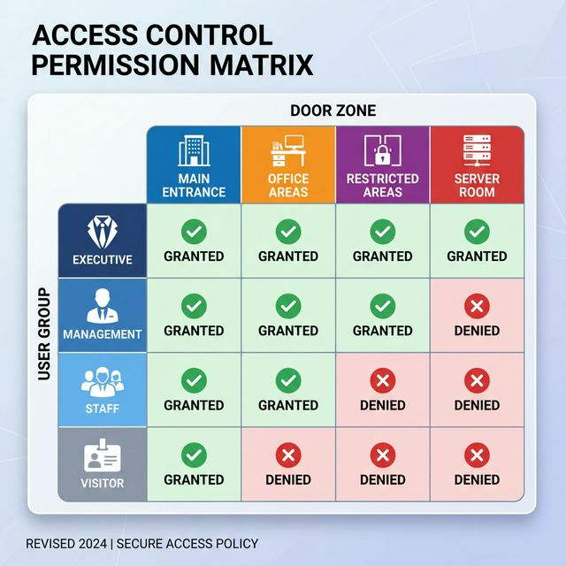
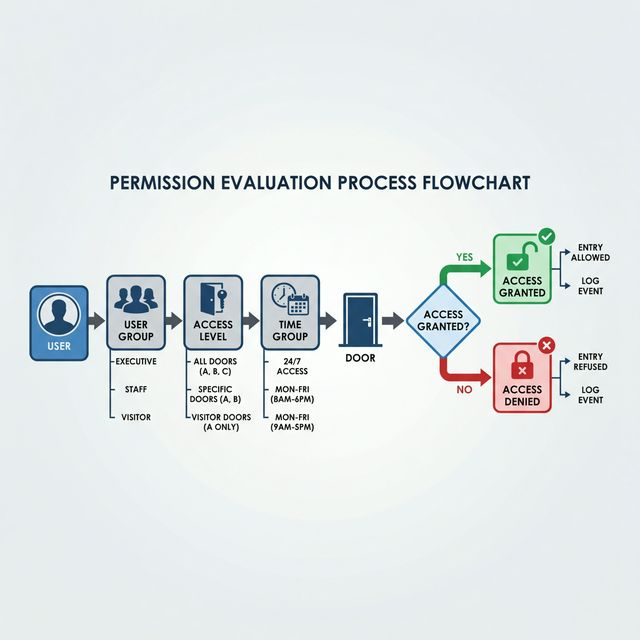
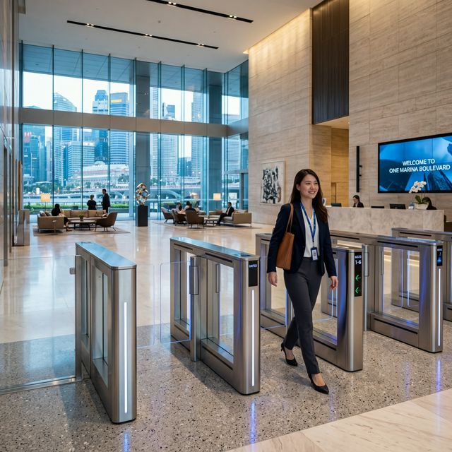
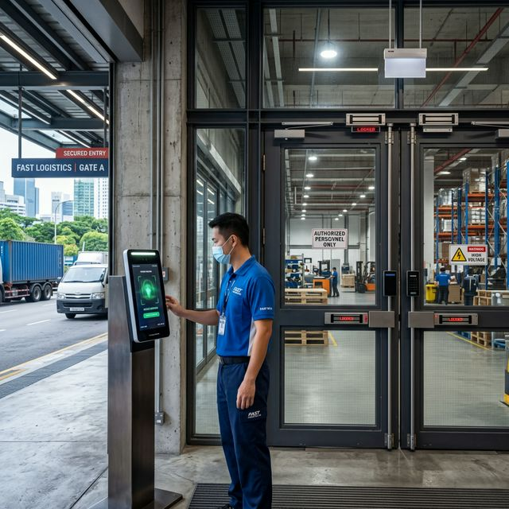

1. What Is a Door Access Control System?
Door access control systems are electronic security solutions that replace traditional mechanical keys with credentials like cards, fingerprints, or mobile phones. They give you complete control over who can enter your premises and when.
Why Mechanical Keys Are Insecure
Traditional mechanical keys have fundamental security weaknesses that make them unsuitable for professional facility management. A single lost or duplicated key can compromise an entire building's perimeter security.
- ✓ Easy Duplication: Keys can be copied in minutes for a few dollars. There's no way to audit duplicates.
- ✓ High Re-Keying Costs: Losing a key requires changing the physical lock cylinder and re-issuing keys to everyone.
- ✓ No Audit Trail: You have no log of who entered a room, at what time, or how long they stayed.
- ✓ No Time Logic: A physical key works 24/7. You cannot restrict a contractor to 'business hours only'.
How Digital Access Solves These Problems
Electronic access control eliminates the inherent weaknesses of traditional keys by introducing an intelligent digital management layer between the user and the door. This allows for millisecond decision-making and instant global security policy updates.
- ✓ Full Audit Traceability: Every entry is logged with a timestamp and identity—audit who was where, and when.
- ✓ Instant Access Revocation: Deactivate lost cards or ex-employee credentials in seconds without touching the locks.
- ✓ Smart Time Scheduling: Define exactly when a credential works (e.g., 9 AM – 6 PM) to prevent out-of-hours breaches.
- ✓ Unified Ecosystem: Link access events to CCTV video pop-ups and fire alarm emergency releases for a holistic security grid.
What Is an Access Control System?
A modern access control ecosystem consists of four core physical components working in synchronisation:
- Credentials: Identification tokens (access cards, fingerprints, facial scans, PIN codes, or mobile phones) used to identify the user.
- Readers: Hardware units mounted outside the door that scan the credential and transmit the data to the system controller.
- Controllers: The "brain" of the system. Controllers validate the scanned credential against the database and send the unlock signal if access is permitted.
- Locks: Electrified hardware (EM locks, electric strikes, or drop bolts) that physically release the door upon receiving a signal from the controller.
The entire system is orchestrated by Management Software (either on-premise or cloud-based), which allows administrators to add/remove users, set access levels, and review audit logs. This entire process happens in milliseconds: User presents credential → Reader scans → Controller validates → Lock releases → Door opens.
Modern Access Control Capabilities
Modern systems go far beyond simple door unlocking, offering intelligence and remote management.
Mobile Access
Allows employees to unlock doors using their smartphones via Bluetooth, NFC, or QR codes. No physical card needed.
Facial Recognition
Provides touchless, hands-free access. Simply look at the camera and the door unlocks. Popular post-COVID for hygiene reasons.
Cloud Management
Enables you to manage the entire system remotely from a mobile app. Grant temporary access to a visitor while you're travelling. Receive instant alerts when doors are forced open.
Multi-factor Authentication
Combines two or more credentials for high-security areas. For example, card + PIN, or card + fingerprint. Prevents unauthorised access even if a credential is stolen.
Integration with Building Systems
Creates automated workflows. Last person exits → Doors auto-lock, alarm arms, lights turn off, air conditioning reduces. Fire alarm activates → All doors unlock for emergency evacuation.
Visitor Management
Issues temporary credentials (QR codes, visitor cards) with automatic expiry. Visitors receive a QR code via email, scan it at the entrance, and gain time-limited access.
2. How Door Access Systems Work
Understanding how access control components work together helps you make informed decisions about your property's security infrastructure.
The Four Core Components
Every physical access control system consists of four essential hardware elements that work in sequence to grant or deny access.
Access Control Signal Flow
The complete access control sequence happens in milliseconds (200-500ms), ensuring a smooth user experience:
- 1. Presentation: User presents credential (card, finger, face).
- 2. Data Extraction: Reader scans and extracts the unique encrypted template.
- 3. Validation: Controller checks database permissions and time group rules.
- 4. Action: If authorised, the controller pulses the lock to release.
- 5. Audit: The event is logged (name, door, time) for audit trail tracking.
Standalone vs Networked vs Cloud Systems
Access control systems are deployed in three main architectures, each suited for different scales.
Operates independently. Credentials programmed directly on the reader. Lowest cost, but no centralised management or comprehensive audit trail.
Controllers connected to a local server. Centralised management and detailed reporting. No internet required, but requires server maintenance.
Manage from anywhere via app or browser. No server needed, automatic updates. Highly scalable and ideal for multi-site businesses.
Access Modes & Authentication Methods
Choose the right security level for each area of your facility:
Single-Factor Auth
Card only or Biometric only. Fast and convenient. Suitable for general office areas and staff entrances.
Two-Factor Auth (2FA)
Card + PIN or Card + Biometric. Prevents unauthorised access if a card is stolen. Recommended for server rooms and finance areas.
Multi-Factor & Two-Person Rule
Maximum security vault areas may require Card + PIN + Biometric or the Two-Person Rule (requires two people to authenticate simultaneously).
3. Types of Access Control Systems
Access control systems are categorised by deployment scale, control architecture, and installation type. Choosing the right architecture ensures your system can scale with your organization.
By Deployment Scale
Access control systems are categorised by their deployment scale. Smaller setups prioritise ease of installation and low cost, while larger enterprise systems focus on centralisation, visibility, and complex site-wide security logic.
Self-contained reader-controller units. Best for shops, residential side gates, or individual room access.
Separate controllers for 2-8 doors each. Centralised management and real-time reporting. Best for professional office suites.
Manage hundreds of doors across multiple sites. Unified platform for access, CCTV, and lift control. Deep integrations.
By Control Architecture
Control architecture defines where the security "brain" lives. While standalone units provide individual door security, networked and cloud architectures offer a unified security hub for the entire facility.
| Architecture | Management | Audit Trail | Infrastructure |
|---|---|---|---|
| Standalone | Door-by-door | None/Limited | Reader only |
| Network (On-Prem) | Centralised | Comprehensive | Local Server |
| Cloud-Based | Anywhere (App/Web) | Real-time | Edge-intelligent Readers |
By Installation Type
Installation Topology: Choosing between high-reliability wired or flexible wireless connectivity.All readers and locks connected via permanent cabling. Maximum reliability, no batteries to maintain, and higher security. Preferred for new builds and permanent offices.
Battery-powered locks and readers communicating via WiFi or Bluetooth. Fast installation without drilling, but requires battery management every 6-12 months.
Hybrid Tip: Many modern systems use wired controllers for main entrances and wireless locks for internal office doors to balance reliability with installation speed.
4. Single Door Access Control
Single door access control systems are self-contained reader-controller units ideal for controlling one to three doors without centralised management requirements.
What Is a Single Door System?
Single door access control systems are self-contained security units that integrate the reader, controller, and database into a single, compact housing. Unlike multi-door systems that separate readers from central controllers, single-door architecture is an "all-in-one" solution mounted directly next to the point of entry.
The Keypad + Proximity Card reader is commonly seen in these installations. It offers users the choice of entering a secure PIN or simply tapping a proximity card or fob for quick entry. This dual-mode authentication provides flexibility for visitors and high security for regular staff.
This architecture is ideal for shops, residential side gates, and isolated secure rooms (like document vaults or server closets). It eliminates the logistical challenge of running lengthy data cables back to a central server room, making it both cost-effective and fast to deploy in existing Singapore properties.
Network-Capable Standalone Units
Getting popular are the network-capable standalone units. It has its own built-in controller and reader and it can be connected via network either to a server management software or to the cloud. It offers flexibility for companies to start small and increase more readers as the company scale.
This architecture provides the security of high-fidelity biometrics with the convenience of centralized remote management, making it a highly scalable choice for growing Singapore businesses.
Popular Models & Examples
Durable zinc-alloy model (IBA 7612) with 1,000 user capacity. High reliability for standalone side gates.

Combines fingerprint scanning with card access. Eliminates card sharing between employees.

5. Multi-Door Access Control
Multi-door access control systems use separate controllers and readers to manage 2-250+ doors with centralised management and deep integration capabilities.
What Is a Multi-Door System?
Multi-door systems separate the "intelligence" (controllers) from the "interface" (readers). This enables centralized management of an entire building from a single software platform.
- ✓ Architecture: Readers are simple scanners, while controllers are hidden in secure internal locations.
- ✓ Reliability: Readers connect via permanent data cables. Controllers link to your main network via Ethernet.
- ✓ Scalability: Controllers typically manage 2, 4, or 8 doors each, networking together for enterprise scale.
Advanced Features & Logic
Anti-Passback
Prevents credential sharing. A user must exit a zone before they can enter again, ensuring one card cannot be used by multiple people.
Door Interlock
Used for high-security airlocks where only one door can be open at a time. Door B will not unlock until Door A is fully closed.
6. Upgrading from Mechanical Locks
Upgrading your facility from physical keys to digital access control is a strategic investment in both operational efficiency and physical security.
The Retrofit Advantage
Most existing doors in Singapore can be retrofitted with electronic access control without requiring a full door or frame replacement. We utilise high-fidelity brackets and strike plates that integrate seamlessly with your current architectural finishes.
The primary benefit of retrofitting is the immediate elimination of the "lost key" security hole. A single digital command can deactivate a lost credential, maintaining building integrity without the cost of physical re-keying.
| Pathway | Key Benefits | Ideal For |
|---|---|---|
| Retrofit | Lower cost, faster install, minimal disruption. | Standard office doors, glass entrances. |
| New Install | Guaranteed alignment, hidden cabling. | Renovations, new office builds. |
Phased Implementation Approach
Phased upgrades help spread costs while providing immediate security benefits at your most vulnerable points.
Main Entrances
Control the primary building perimeter. Revoke ex-staff access instantly and track all visitors.
High-Value Zones
Secure server rooms, finance offices, and executive suites with audit trails.
Full Facility
Integrate lift access and secondary side gates for a unified security ecosystem.
7. Credential Security & Management

Effective credential management is critical to access control security. Understanding how credentials are issued, stored, and deactivated ensures your system remains secure throughout its lifecycle.
The transition from physical keys to digital credentials eliminates the risk of "lost key" security holes. While a lost physical key can be copied or bypass security, a digital credential is a unique encrypted identity that exists only while authorised in the central database.
The Enrolment Process
Modern systems make user on-boarding fast and professional, typically taking only 2-5 minutes per user.
Associate a unique ID with an employee name in the software. Bulk imports from CSV are available for large organisations.
Scans create mathematical templates—one-way hashes that cannot be reversed into photos, ensuring user privacy.
Virtual credentials are sent via app. Employees self-enrol on their smartphones, reducing administrative overhead.
Storage & Encryption Security
Security in Transit
Communication between readers and controllers uses OSDP (Open Supervised Device Protocol) to prevent credential interception or "sniffing".
Encryption at Rest
Credential databases are encrypted using AES-256 standards, ensuring user data is protected even in the event of hardware theft.
8. Credential Types & Technologies
Access control supports multiple credential technologies, each with different security levels, costs, and user experience.

Credentials are the physical or digital keys carried by users. Security is defined by the encryption level of the credential itself, not just its physical form factor.
- ✓ Smart Cards: Advanced MIFARE/DESFire. Encrypted to prevent unauthorised cloning.
- ✓ Mobile Access: Use smartphones via BLE or NFC for tap-to-entry convenience.
- ✓ Biometric Tokens: Your face or fingerprint. Impossible to lose, share, or forget.
Card Security Comparison
| Technology | Security Level | Cloning Risk | Best For |
|---|---|---|---|
| Proximity (125kHz) | Low | High | Legacy residential sites |
| MIFARE Classic | Medium | Moderate | General Office Suites |
| MIFARE DESFire EV3 | High | Very Low | High-Security Enterprise |
9. Reader Types Explained
Readers are the physical interface between users and the access control system. Choosing the right reader type depends on your chosen credential technology, security requirements, and environmental conditions.

Readers come in various form factors to suit both indoor and outdoor applications.Readers are the physical interface where users present their credentials. The right reader type depends on your required security level and environmental conditions.
- ✓ Surface Mount Readers: Compact and easy to install on any wall surface. Ideal for standard office doors and internal access points.
- ✓ Mullion Readers: Slim design for narrow door frames or aluminium profile doors. Perfect for modern glass entrances.
- ✓ Keypad Readers: Combine card access with PIN entry for dual-factor security or temporary visitor access.
- ✓ Long-Range Readers: Scan cards or UHF tags from several metres away. Ideal for vehicle gates and hands-free entry points.
RFID Card Readers
Card readers are the industry standard for commercial access. They scan cards or fobs and transmit encrypted ID data to the controller in milliseconds. We categorise these by frequency and encryption level:
- EM Readers (125kHz): Basic, reliable, and low cost. Ideal for general office areas.
- MIFARE/Smart Readers (13.56MHz): Support encrypted communication. Highly recommended to prevent card cloning.
- Multi-Tech: Support both old EM and new MIFARE—perfect for transitionary facility upgrades.
Biometric & Facial Terminals
Biometric readers eliminate the risk of shared cards and "buddy punching" in time attendance systems.
Available as optical or capacitive sensors. Modern units store up to 5,000 templates locally and perform matching in under 1 second.

3D terminals use dual cameras for depth sensing, preventing spoofing via photos. Completely touchless and hygienic.

Environmental & Placement Considerations
IP66 Weatherproofing
Outdoor readers must be rated for Singapore's humidity and heavy rain. We use UV-resistant housings to prevent fading in direct sunlight.
Optimal Mounting Height
Standard readers are mounted 1.2m to 1.4m from the floor. Facial terminals are mounted slightly higher (1.4m to 1.6m) to align with adult face height.
Vandal Resistance
For public-facing gates, we recommend IK10 impact-rated readers with built-in tamper switches that alert security if the unit is pried off the wall.
10. Lock Types & Selection
The electric lock is the physical strength of your system. Choosing the right lock depends on the door material, swing direction, and fire safety requirements of your specific location.
Electromagnetic (EM) Locks
Electromagnetic Locks (EM Locks)
EM locks use a powerful electromagnet to hold the door closed with zero moving parts. This makes them the ultimate choice for high-durability commercial environments.
- ✓ Holding Force: From 600lbs (280kg) for interior doors to 1200lbs (600kg) for high-security portals.
- ✓ Fail-Safe Security: Essential for fire safety. The door automatically releases if power is cut or fire alarm is triggered.
- ✓ Clean Aesthetic: Surface-mounted on glass or recessed into metal frames.
Electric Strikes & Deadbolts
Electric Door Strikes
Electric strikes replace the standard strike plate in your door frame. This is the ideal solution for retaining your existing mechanical locks and aesthetic while adding electronic control.
- ✓ Fail-Secure Capability: Remains locked if power fails, keeping your office secure after hours.
- ✓ Hidden Interior: Only the strike plate is replaced; no large hardware is visible on the door face.
- ✓ Retrofit Friendly: Most cost-effective way to convert a standard office door to access control.
Replaces the standard strike plate in the frame. Allows the door to stay locked mechanically but release electronically. Best for wooden doors.
A heavy-duty metal bolt that drops into a floor strike. Provides double-swing door compatibility and very high holding force.
Integrated into the door itself. Provides the cleanest appearance (hidden) and includes a mechanical key override for emergencies.
Lock Selection Matrix
| Door Type | Primary Choice | Holding Force | Safety Mode |
|---|---|---|---|
| Frameless Glass | EM Lock + U-Bracket | 600kg | Fail-Safe |
| Main Entrance (Metal) | Heavy Duty EM Lock | 600kg - 1200kg | Fail-Safe (with UPS) |
| Internal Suite (Wood) | Electric Strike | ~800kg | Fail-Secure Op. |
| Fire Exit Door | EM Lock | 600kg | Mandatory Fail-Safe |
11. Planning Your Access Control System
Effective access control planning considers property type, user count, security requirements, and integration needs. This section provides detailed planning guidance for Singapore property managers across different industries.
1. Residential (Condo & Landed)
Typical requirements: 1-10 users, basic security, high ease of use.
Digital locks are the gold standard for residential doors, offering card, PIN, and fingerprint entry without complex wiring.
We recommend card readers with EM locks for side gates. Domestic helpers can be given time-restricted access cards for specific working hours.
 Layered residential security strategy: Digital lock for main
entrance + RFID for side gates.
Layered residential security strategy: Digital lock for main
entrance + RFID for side gates.
2. Professional Offices (SME to Enterprise)
Reception and lobbies benefit from high-throughput facial recognition to reduce bottlenecks during morning check-ins.
Standard card readers for department-specific areas ensure HR and Finance remain secure from general staff access.
Server and cash rooms require two-factor authentication (Card + Fingerprint) and full audit trails.
 Office zoning: Segmenting movement between general work areas
and high-security server rooms.
Office zoning: Segmenting movement between general work areas
and high-security server rooms.
3. Industrial, Warehouse & Dormitories
Focus on shift management, safety compliance, and ruggedized hardware.
Shift-Based Access
Automate door permissions to match shift schedules. Day shift cards auto-expire at 6 PM, ensuring no unauthorised after-hours entry.
Two-Person Rule
For hazardous material or high-value chemical storage, the system can require two independent employee credentials within 30 seconds to grant entry.
 Ruggedised industrial access: Combining biometric precision
with high-holding-force magnetic locks.
Ruggedised industrial access: Combining biometric precision
with high-holding-force magnetic locks.
4. Hospitality & Specialised Care
Integration with Property Management Systems (PMS) allows for mobile keys and automatic checkout deactivation.
Delayed-egress locks and wristband detection prevent confused residents from wandering out into traffic while remaining fire-code compliant.
12. Cloud-Based Access Control
Cloud access control moves the "Command & Control" logic from local on-premise servers to the cloud, enabling multi-site management from any device.
Eliminating the Local Server
Traditional systems require a dedicated Windows server running in your IT room. Cloud-based systems use "Edge-Intelligent" controllers that securely communicate directly with our cloud platform via encrypted HTTPS protocols.
This architecture is ideal for companies with multiple branches or satellite offices across Singapore, allowing security managers to revoke credentials for all sites instantly from a single smartphone app.
ROI Comparison: Cloud vs On-Premise
| Metric | On-Premise (Legacy) | Cloud-Based (Modern) |
|---|---|---|
| Infrastructure | Local Server Required | None (Edge Readers) |
| Maintenance | Manual OS/DB Updates | Automated OTA Updates |
| Accessibility | VPN or LAN Only | Anywhere (App/Web) |
13. Management Software & Features
Management software is the command centre for your security ecosystem. Modern platforms go far beyond simple door unlocking, offering predictive analytics, unified monitoring, and deep business integrations.
Core Platform Capabilities
Manage the entire employee journey from enrolment to offboarding with ease.
A visual dashboard showing the status of every door in real-time across your facility.
Track exactly who accessed high-security zones with automated reporting for HR.
14. Permissions Architecture
Access control is not just about "who" has access, but "when" and "where". A robust permissions architecture ensures that security policies are enforced consistently across your entire facility.
The Three Pillars of Access
Categorise staff by department (e.g., HR, Engineering, Visitors). Assign permissions to the group, not the individual, for easier management.
Define access windows (e.g., 9-6 Weekdays). Automatically restrict access for contractors or part-time staff outside these hours.
A transparent grid view of your site's access policy, showing exactly which groups can access each zone.


Decision Architecture: How the controller evaluates User, Time, and Door groups to verify access.Industry Case Studies
Segmenting one building for 20 companies. Each tenant manages their own floor permissions while sharing common gym/rooftop lobby access.
Clinical Role-Based Access: Nurses have Ward access; Doctors have Surgical zone access; Admin restricted to Offices.
Safety-Interlocked zones: Only employees with "Forklift Certified" flag in their profile can unlock warehouse charging bays.
Best Practice: The Principle of Least Privilege
Always start by granting the minimum access required for an employee's job function. It is much easier to add permissions later than to identify and revoke excessive access after a security breach.
15. Time & Attendance Integration
Access control systems can double as high-precision time and attendance platforms, automatically tracking work hours as employees enter and exit. This eliminates manual timesheets, prevents time theft, and ensures payroll accuracy while remaining MOM compliant.
How It Works: Every Tap is a Punch
Instead of dedicated time-clocks, we configure exit and entry readers to function as attendance terminals. The "First entry of the day" is logged as the clock-in, and the "Last exit of the day" is the clock-out. The system automatically calculates total hours, excluding lunch breaks where required.
Automated HR Dashboards
Export detailed timesheets directly to your payroll software. Instantly identify patterns of tardiness or absenteeism with visual heatmaps from the centralized platform.
Solving "Buddy Punching"
Time theft through "buddy punching" (clocking in for a friend) can cost a 100-staff factory upwards of $18,000 per year. We recommend Biometric Verification (Fingerprint or Facial Recognition) for shift workers to ensure that every "time punch" corresponds to the actual physical presence of the employee.
16. Digital Door Locks
Digital door locks are all-in-one electronic locking solutions ideally suited for residential main doors, hotel rooms, and small office suites where full multi-door cabling is not required.
Architecture: All-In-One Hardware
Digital locks integrate the reader, handle, and locking bolt into a single unit. Because they are battery-powered, they require no cabling through the door or frame, making them the fastest security upgrade for existing Singapore properties.
While professional "Access Control" (multi-door) is built for high-traffic commercial use, "Digital Locks" are built for convenience. Common authentication methods include fingerprint scanning, PIN codes, RFID tags, and Bluetooth smartphone entry via brands like Samsung, Yale, or Gateman.
Digital Lock vs. Professional Access Control
| Feature | Digital Door Lock | Professional Access Control |
|---|---|---|
| Best For | Residential / Small Office | Commercial / High Traffic |
| Power Source | Battery (Replace 6-12 mths) | Permanent Wired Power |
| Scalability | Standalone (Per door) | Enterprise (250+ doors) |
17. Visitor Management Systems (VMS)
Modern VMS solutions eliminate manual logbooks, digitising the guest entry process for improved security, data accuracy, and a premium lobby experience.
Digital Sign-In Workflows
Instead of paper logs, visitors use digital kiosks or their own smartphones to register. This ensures that every guest is accounted for and their host is instantly notified of their arrival via SMS or email.
- ✓ QR Check-in: Pre-registered guests tap a QR code for instant entry.
- ✓ Host Alerts: Automated notifications to hosts via SMS or Slack.
- ✓ Muster Lists: Real-time emergency evacuation lists for fire wardens.
18. Elevator & Lift Access Control
Vertical access control secures the most critical transition point in high-rise buildings, ensuring occupants only reach the specific floors they are authorised to visit.
Floor-Level Authentication
Most lift systems are interlocked with the access control panel via an "Elevator Control Module." Upon card tap, the system identifies the user and only activates the buttons for their permitted floors.
This architecture is vital for multi-tenant high-rise offices and residential penthouses, preventing unauthorized movement between company floors or private luxury units.
19. Advanced System Integrations
Modern access control systems act as the bridge between security, facility management, and life safety systems, creating a unified building environment.
CCTV Video Verification
Link every "Door Scan" to a camera view. In high-security environments, a video popup on the security desk allows for instant visual verification of the entrant, preventing card sharing and tailgating.
20. Turnstiles & Physical Barriers
Physical barriers enforce strict one-person-per-credential authentication, effectively preventing "tailgating" and ensuring 100% accurate occupancy tracking.
Lobby Access Solutions
Economical waist-height barriers with rotating arms. Ideal for gyms and factory perimeters. High throughput.
Premium glass or acrylic panels that swing or slide open. Perfect for modern office lobbies.
High-speed optical barriers with retracting glass panels for sensitive corporate HQs.
 Tripod Turnstiles: Effective, low-cost pedestrian control
for high-traffic industrial and commercial zones.
Tripod Turnstiles: Effective, low-cost pedestrian control
for high-traffic industrial and commercial zones.

Flap Barriers: High-speed, prestige-tier entrance control for modern corporate headquarters.High-Prestige Speed Gates

Speed gates offer the highest throughput (~40 people/minute) using invisible infra-red sensors to detect tailgating without the need for physical bars.
Specialised High-Security Barriers
Floor-to-ceiling rotating cages for maximum security. Impossible to jump or crawl under. Essential for military bases, prisons, and unmanned industrial perimeters.
Wider gates next to standard turnstiles for wheelchairs, strollers, and delivery trollies. Fully ADA-compliant for inclusive building access.
Vehicle Access Control
Car Park Boom Barriers: Automate your car park with ANPR (Automatic Number Plate Recognition). Our cameras read licence plates in milliseconds, lifting barriers for season parkers без driver intervention.
Automatic Rising Bollards: High-security vehicle blockage for embassies or pedestrian plazas. These heavy-duty steel posts rise from the ground to prevent vehicle-ramming attacks.
21. What Does It Cost?
System costs vary based on door count, technology choice, and integration depth. Use these budgetary guides for initial project planning in Singapore.
Budgetary Estimates by Property Type
| Segment | Typical Scope | Budgetary Cost (SGD) |
|---|---|---|
| Small Office | 1-3 Doors (Card Readers) | $2,000 – $4,500 |
| Enterprise Space | 10 Doors + Biometrics + T&A integration | S$18,000 – S$35,000 |
| Commercial Building | 40 Doors + Lift Access + Fire Link | S$80,000 – S$150,000+ |
| Residential Side-Gate | 1 Door (Outdoor Ruggedised Reader) | S$1,200 – S$2,500 |
ROI & Savings Analysis
Operational Payback
- Eliminate Security Guards: A single turnstile lane can automate lobby enforcement for an 11-month payback vs security guard labour.
- Prevent Time Theft: Biometric T&A integration typically saves 3-5% on monthly payroll by eliminating "buddy punching."
- No More Re-Keying: When keys are lost or staff leave, deactivating a card costs $0, compared to S$300+ for mechanical lock changes.
 TCO Breakdown: Evaluating long-term subscription
costs vs upfront server CapEx.
TCO Breakdown: Evaluating long-term subscription
costs vs upfront server CapEx.
 ROI Analysis: Cumulative savings from improved payroll
accuracy and reduced hardware maintenance.
ROI Analysis: Cumulative savings from improved payroll
accuracy and reduced hardware maintenance.
22. Real Installation Examples
Learn from actual access control deployments across different property types in Singapore. These case studies highlight the balance between security requirements, physical constraints, and ROI.
Case Study 1: Boutique Law Firm (15 Staff)
Protecting sensitive client files in a 3-floor commercial office. Needed to restrict junior staff from partner levels and ensure a two-person rule for document vaults.
8-door Akuvox Cloud system using Card+PIN readers. Integrated a 'two-person rule' logic for vault access and visitor QR codes for clients.
Zero unauthorised access incidents in 6 months. Receptionist saved 3 hours/week on visitor management. Full compliance with legal audit requirements.
Case Study 2: Logistics Warehouse (80 Staff)
Preventing "buddy punching" (payroll fraud) and ensuring only forklift-certified staff could access dangerous production zones.
Facial recognition at the main gate for T&A. Interlocked door zones that check the employee's certification status in real-time before unlocking.
Payroll costs reduced by 4.8% (S$35k/year savings) due to accurate time tracking. Passed MOM audit with zero discrepancies.

Case Study 2: High-throughput facial recognition integrated with safety-interlocked warehouse zones.23. Maintenance & Best Practices
Preventive maintenance ensures your access control system remains reliable and secure. Intermittent faults are often the result of neglected door alignment or outdated firmware.
Maintenance Checklist
Test all readers with a known card. Verify door re-locking speed and check for "Door Held Open" alarms.
Review active user lists. Deactivate ex-employees and audit any temporary "Manager Override" permissions.
Inspect EM lock contact plates for rust/alignment. Replace UPS batteries every 3 years to ensure power failure resilience.
24. Fire Safety & Compliance
Access control systems must never impede emergency evacuation. In Singapore, SCDF fire codes mandate strict integration between security hardware and life safety systems.
SCDF Mandatory Compliance: Fail-Safe Requirement
All doors located in a "Means of Escape" (exit routes) MUST use Fail-Safe locks. This ensures that upon fire alarm activation or power failure, all magnetic locks release immediately to allow unimpeded evacuation. Fail-Secure locks are strictly prohibited on fire exit doors unless a mechanical manual override is provided.
Fire Alarm Integration

Our controllers are wired directly to the building's Fire Alarm Panel (FAP) via a dry-contact relay. When the alarm triggers, the 12/24V power to all door locks is cut at the source—guaranteeing that occupants can exit without fumbling for cards or fingerprints during an emergency.
25. PDPA, Privacy & Cybersecurity
As access control systems collect personal data (names, movements, and biometric templates), compliance with Singapore's Personal Data Protection Act (PDPA) is essential.
PDPA Obligations
You must obtain explicit Consent before enrolling staff biometrics. Use Purpose Limitation notices to explain that data is for security and attendance only. Always implement a Retention Policy to auto-purge logs after 90–365 days.
Cyber Resilience
Access control management software should be on a separate VLAN, isolated from the corporate network. Always enforce MFA (Multi-Factor Authentication) for system administrators to prevent unauthorised user additions.
26. Common Mistakes to Avoid
Buying a 2nd-floor controller with no spare capacity often results in expensive hardware replacement when the company grows by just one door. Always plan for 20% future expansion.
Installing a standard strike on an outswing door is a common site-survey error. Always verify the door swing before ordering hardware to avoid rework costs.
For side-gate readers, rain can travel along the cable directly into the electronics. Always ensure a "drip loop" is made during installation to prevent water damage.
Using default "admin/1234" login for the door controller is an open invitation for hackers. Change passwords immediately upon commissioning.
27. Brands & Systems We Carry

ZKTeco
Expert in biometric scanners and facial recognition terminals.

Suprema
Premium South Korean biometric security for high-risk zones.

Hikvision
Unified platform for access, CCTV, and attendance management.
DSC PowerSeries
Scalable from 8 zones to 100 zones. Industry standard for power failure resilience.
28. Frequently Asked Questions
What happens to my doors during a power failure?
This depends on your lock type. **Fail-Safe** doors (like EM locks) will unlock immediately for safety. **Fail-Secure** doors (like some electric strikes) will stay locked. We recommend installing a UPS (Battery Backup) to keep systems powered for 2–4 hours during an outage.
Can I use my existing door or must I replace the whole frame?
Most wood and metal doors can be retrofitted. We can install electric strikes into existing frames or mount EM locks to the top header without replacing the entire door structure.
Is cloud access control more expensive than on-premise?
Cloud systems have lower upfront costs (no server needed) but require a small monthly subscription. On-premise systems have a higher initial "CapEx" but minimal ongoing software costs. Cloud is usually 30% more cost-effective for 1-5 door setups.
How often should I audit my user database?
We recommend a full audit every quarter. This ensures that any temporary contractors or ex-employees are permanently purged from the system, maintaining your security integrity.